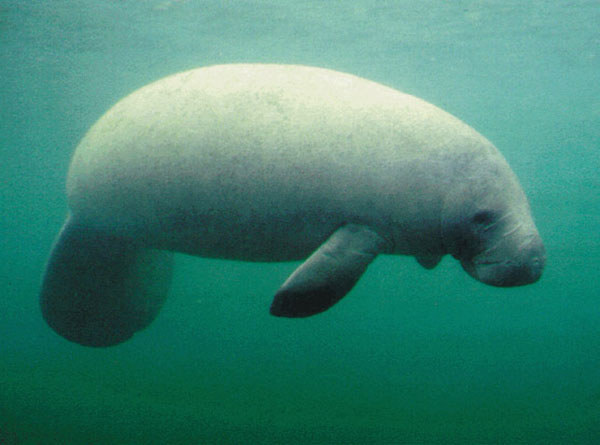

Manatees
You'll only see the difference between this and version 1 at a width less than 700px.
Manatees (family Trichechidae, genus Trichechus) are large, fully aquatic, mostly herbivorous marine mammals sometimes known as sea cows. There are three accepted living species of Trichechidae, representing three of the four living species in the order Sirenia: the Amazonian manatee (Trichechus inunguis), the West Indian manatee (Trichechus manatus), and the West African manatee (Trichechus senegalensis). They measure up to 13 feet (4.0 m) long, weigh as much as 1,300 pounds (590 kg), and have paddle-like flippers.
A West Indian manatee in Florida waters. Photo by U.S. Department of the Interior, U.S. Geological Survey (public domain). Source: Wikimedia Commons.
{kind=link}
Manatees inhabit the shallow, marshy coastal areas and rivers of the Caribbean Sea and the Gulf of Mexico (T. manatus, West Indian manatee), the Amazon Basin (T. inunguis, Amazonian manatee), and West Africa (T. senegalensis, West African manatee).
Florida manatees can move freely between salinity extremes. The West Indian manatee migrates into Florida rivers, such as the Crystal, the Homosassa, and the Chassahowitzka Rivers. The headsprings of these rivers maintain a 22 °C (72 °F) temperature all year.
Text copied from Wikipedia.